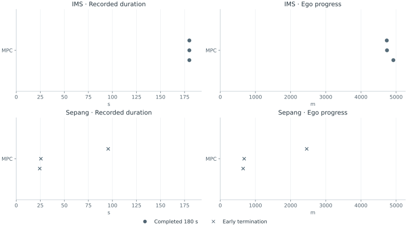

01
Model
The original five-state Frenet bicycle model includes speed, steering, rolling resistance, and drag.
Autonomous racing · Vehicle simulation & control
An improved vehicle_gym with a portable nonlinear planner, reproducible multi-car scenarios, and a clear view of what the optimizer predicts.
A transparent interface between strategic decisions, physical dynamics, and the trajectory you see on screen.
01
The original five-state Frenet bicycle model includes speed, steering, rolling resistance, and drag.
02
Set desired speed and lateral position through one typed reference interface.
03
Solve a 3-second multiple-shooting problem with road, actuator, and obstacle constraints.
04
Apply only the first control for 0.25 s, observe all cars, and solve a new plan.
Inspect the latest MPC solve: the blue ego plan and orange obstacle assumptions update every 0.25 s. Solid cars show the recorded simulation. Playback starts paused and stops at the end.
Actual speed
—Requested speed
—Current position
—Latest MPC solve
—The blue path is the ego’s current 3-second plan. Only its first 0.25-second control is applied. At the next control step, the planner observes every car and solves again. A translucent blue car marks the selected future time in this current plan; it is not a forecast being scored against later ego motion.
The orange paths are the other vehicles’ trajectories supplied to the obstacle constraints in that same solve. Leaders and alongside cars retain their measured speed and heading error. A car fully behind the ego is assumed to brake to a stop, following the role distinction in Section IV-B.3 of the paper. This is a feasibility assumption about yielding, not a prediction of intent.
Choose “Hold an opponent assumption for 3 s.” Its orange ghost and the corresponding solid opponent then show the same timestamp. The ghost follows the assumption recorded at the start of that window. Separation shows how the actual opponent departed from that assumption. A braking follower normally diverges because it does not actually have to brake. This diagnostic never freezes the controller: MPC continues to replan every 0.25 s.
Click an event to pause one second before it. A measured defensive move requires more than 0.8 m of ego lateral motion toward an approaching challenger’s line over two seconds, while that challenger is held below its target speed. Events are diagnostics; they do not add a training reward.
Blue: actual speed. Dashed gray: reference supplied to MPC.
Blue: actual position across the track. Dashed gray: requested lateral position.
Each curve is an opponent’s distance ahead of the ego, using its car color. Crossing zero changes center order; a pass event requires a full car length of clearance.
Selected opponent’s actual speed versus its free-running target. The event summary counts time spent slowed behind the ego; general speed loss alone does not establish blocking.
Research contribution · ECC 2023
The research separates high-level strategic choices from low-level motion planning. vehicle_gym provides the dynamics and planner interface. Its new portable backend makes this separation runnable without compiling acados; the original acados implementation remains in the repository.
Three references · three tasks · one fixed seed
Nine recorded simulations compare center, left, and right references in overtaking, blocking, and mixed traffic. Every trajectory below comes from the nonlinear planner and the original five-state vehicle model.

All nine runs use seed 101 and a 24-second episode limit. This is a deterministic demonstration of the interface, not a statistical benchmark. Collisions use oriented rectangles in Cartesian coordinates, sampled every 0.05 seconds.
| Task | Reference | Return | Final rank ↓ | Completed | Solver failures | Collisions |
|---|---|---|---|---|---|---|
| Overtaking | Center reference | 191.3 | 1 | Yes | 0 | 0 |
| Overtaking | Left reference | 192.3 | 1 | Yes | 0 | 0 |
| Overtaking | Right reference | 192.3 | 1 | Yes | 0 | 0 |
| Blocking | Center reference | 182.3 | 3 | Yes | 0 | 0 |
| Blocking | Left reference | 195.3 | 3 | Yes | 0 | 0 |
| Blocking | Right reference | 195.4 | 3 | Yes | 0 | 0 |
| Mixed | Center reference | 158.3 | 2 | Yes | 0 | 0 |
| Mixed | Left reference | 211.3 | 2 | Yes | 0 | 0 |
| Mixed | Right reference | 161.3 | 2 | Yes | 0 | 0 |
| Blocking controller | Defensive moves | Held-up vehicle-seconds | Opponent passes |
|---|---|---|---|
| Center reference | 0.0 | 0.0 | 2.0 |
| Left reference | 1.0 | 1.8 | 2.0 |
| Right reference | 0.0 | 1.8 | 2.0 |
Mean counts and durations per episode. Held-up vehicle-seconds sum over challengers: more than one can be slowed at once. Read these alongside completion and failures; an early failure is not successful defense.
Completion, solver failures, and collisions are reported for every method above. This finite evaluation does not establish safety. A rejected optimizer solution ends the episode before its control is applied. Return combines forward progress and the number of opponents behind the ego.
Install the portable backend and regenerate every recorded driving scene with one command.
python3 -m venv .venv
source .venv/bin/activate
pip install -e '.[visualization,dev]'
python -m vehiclegym.demo
python -m pytest
python -m http.server 8000 --directory docsPython 3.9 · NumPy 1.26.4 · SciPy 1.13.1 · CasADi 3.8.1 / IPOPT. The planner uses 12 intervals of 0.25 s, a five-state Frenet model, RK4 integration, and three opponents. Simulation uses five substeps per interval. Full settings, checkpoint provenance, and limitations are documented in the repository.
Python source, regression tests, recorded evaluations, editable web visualization, a scientific figure generator, citation metadata, and GitHub Pages deployment. The original acados planner and demonstration scripts remain available as an optional legacy stack.